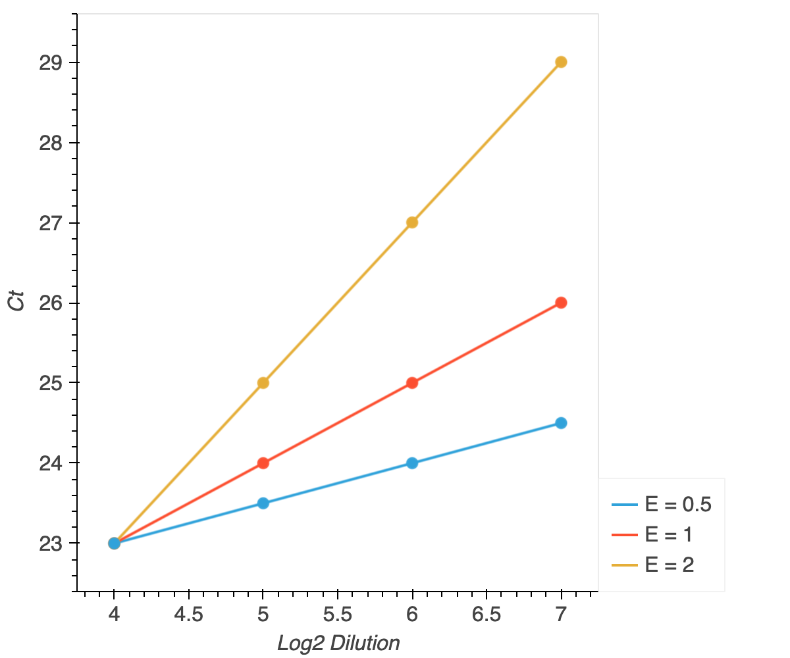

efficiency
In a perfect PCR reaction, the amount of product should double with each additional reaction cycle. In reality, primers often deviate considerably from perfect doubling. This deviation causes problems for qPCR analysis, as an assumption of comparing Ct values between primer sets is that the amplification curves have approximately the same shape during their logarithmic phases. As such, verifying that primers amplify approximately exponentially is an important part of qPCR experimentation.
The most common metric calculated to compare primer amplification is efficiency. Efficiency is calculated from a standard curve. For each two-fold dilution in the standard curve, the Ct value should increase by 1. In other words, when Ct values are plotted against \(log_2(dilution)\), the absolute value of the slope should be 1. This is the efficiency value (E).
If E > 1, the amount of PCR product is more than doubling each PCR cycle. This is often due to primer-dimers or other issues with multiple amplicons. If E < 1, the PCR product is doubling more slowly than once per PCR cycle. This could be due to primer secondary structure, non-optimal melting temperature, primer saturation, or difficult templates.

To test the primers over a large enough concentration range, each dilution should be at least a factor of two, and three to five dilutions should be used. For certain targets, the reverse transcription reaction conditions and dilution factors may need to be adjusted to keep the highest Ct values under 30. Additionally, optimal primer concentrations may vary, but in general a final concentration between 0.5-1.0µM gives good results.
efficiency() calculates E from a standard curve using linear regression and returns the E value, the correlation coefficient of the linear regression, and a plot of the calculated curve for each primer set. It also has the option of returning the linear model.
Using namer to get a dataframe for efficiency
For this example, we will just look at data from a Lightcycler 480 formatted as namer() anticipates. The namer() documentation has details on how to use the function for other instruments and dilution arrangements.
[1]:
import equipt
[2]:
primers = ['Fus (112734868c1)',
'Fus (15029724a1)',
'Ewsr1 (6679715a1)',
'Ewsr1 (88853580c2)',
'Taf15 (141803447c1)',
'Taf15 (141803447c2)',
'Tsix exon4']
samples = ['mESC total cDNA']
reps = 3
config = 'line'
kwargs = {'with_dil':samples,
'dil_series':[20,40,80,160],
'dil_rest':None}
df = equipt.namer('data/22.11.22_PrimerCurve_Ct.csv',
primers,
samples,
reps,
config,
**kwargs)
df.iloc[:6]
[2]:
| Pos | Cp | Primer | Name | NamePrim | |
|---|---|---|---|---|---|
| 0 | A1 | 17.51 | Fus (112734868c1) | mESC total cDNA_20 | mESC total cDNA_20Fus (112734868c1) |
| 1 | A2 | 17.54 | Fus (112734868c1) | mESC total cDNA_20 | mESC total cDNA_20Fus (112734868c1) |
| 2 | A3 | 17.55 | Fus (112734868c1) | mESC total cDNA_20 | mESC total cDNA_20Fus (112734868c1) |
| 3 | A4 | 18.49 | Fus (112734868c1) | mESC total cDNA_40 | mESC total cDNA_40Fus (112734868c1) |
| 4 | A5 | 18.52 | Fus (112734868c1) | mESC total cDNA_40 | mESC total cDNA_40Fus (112734868c1) |
| 5 | A6 | 18.54 | Fus (112734868c1) | mESC total cDNA_40 | mESC total cDNA_40Fus (112734868c1) |
We can now see that the ‘Name’ column has the sample name and the dilution factor separated by an underscore. If a user plans to write their own script to label dilutions, it is critical that samples are labeled in this way.
Using efficiency
[3]:
from bokeh.layouts import gridplot
import bokeh.io
bokeh.io.output_notebook()
efficiency() takes three parameters and two optional keyword arguments. Their documentation is reproduced here:
Params
______
ct_data : a dataframe
Output of namer().
with_dil : list of strings
List of samples that have dilution series. Generally has only one value,
but in specific cases multiple samples may have curves.
returnmodel : Bool
Whether to return a dataframe containing the linear regression model.
Default False
**kwargs : dictionary
thresh : float
The acceptable standard deviation of replicate well Ct values.
averager() is used to identify wells to drop.
reps : int
Number of replicate wells loaded per sample.
It returns either two or three outputs depending on the value of returnmodel, as specified in the documentation:
Returns
_______
plot_dict : a dictionary
A dictionary in which the keys are samples and the value is a list of
Bokeh plots for each primer tested.
eff_df : a dataframe
A dataframe containing the efficiency values and R^2 statistic
calculated for each sample-primer pair.
model_df : a dataframe
Only returned if returnmodel == True. A dataframe containing the
intercept and slope of the linear model for each sample-primer pair.
Using the dataframe generated above, we can easily calculate efficiency values:
[4]:
eff_kwargs = {'thresh':0.1,
'reps':3}
plot_dict, eff_df = equipt.efficiency(df,
samples,
returnmodel=False,
**eff_kwargs)
eff_df
[4]:
| Name | Primer | Efficiency | Rsquared | |
|---|---|---|---|---|
| 0 | mESC total cDNA | Ewsr1 (6679715a1) | 0.953 | 0.934628 |
| 1 | mESC total cDNA | Ewsr1 (88853580c2) | 0.976 | 0.934442 |
| 2 | mESC total cDNA | Fus (112734868c1) | 0.952 | 0.921493 |
| 3 | mESC total cDNA | Fus (15029724a1) | 0.997 | 0.932829 |
| 4 | mESC total cDNA | Taf15 (141803447c1) | 1.023 | 0.925023 |
| 5 | mESC total cDNA | Taf15 (141803447c2) | 1.000 | 0.933382 |
| 6 | mESC total cDNA | Tsix exon4 | 1.108 | 0.929611 |
Immediately we can see most of the primers have acceptable efficiency values, but Tsix exon4 is a bit high.
Standard curve visualization with efficiency
Having calculated the efficiency values, we noticed that two of our primer sets appear to have unacceptable values. Looking at the plots of the standard curve can give insights on what might be going wrong with those primers. efficiency() returns a dictionary that uses the sample names as keys and a list of Bokeh plots as values for easy visualization. Here are all the plots laid out in a gridplot:
[5]:
eff_gp = gridplot(plot_dict['mESC total cDNA'], ncols=2)
bokeh.io.show(eff_gp)
Just looking at Tsix exon4, we can see that the Ct values are reasonable, the replicate wells cluster closely together, and the threshold filtering applied during the calculation did not exclude any samples:
[6]:
bokeh.io.show(plot_dict['mESC total cDNA'][-1])
Since we applied a standard deviation threshold, efficiency() called averager() to remove poorly replicating wells. These wells can be found in the droppedWells.txt log file:
[7]:
with open('droppedWells.txt','r') as f:
print(f.read())
Outlier Wells Dropped:
mESC total cDNA_160Fus (112734868c1) - 1
Samples Removed:
One of the Fus (112734868c1) wells was removed at the highest dilution level. This likely indicates a pipetting error and is not a serious cause for concern. No samples were removed entirely, so the full standard curve was analyzed for each primer set.
Returning the linear model
Occasionally, we may want to know the exact function that efficiency() fit for a given standard curve. This is possible by setting returnmodel to True.
[8]:
plot_dict, eff_df, model = equipt.efficiency(df,
samples,
returnmodel=True,
**eff_kwargs)
model
[8]:
| Name | Primer | Coefficient | Intercept | |
|---|---|---|---|---|
| 0 | mESC total cDNA | Ewsr1 (6679715a1) | -1.035 | 14.411 |
| 1 | mESC total cDNA | Ewsr1 (88853580c2) | -1.018 | 13.527 |
| 2 | mESC total cDNA | Fus (112734868c1) | -1.036 | 13.032 |
| 3 | mESC total cDNA | Fus (15029724a1) | -1.002 | 13.355 |
| 4 | mESC total cDNA | Taf15 (141803447c1) | -0.984 | 14.827 |
| 5 | mESC total cDNA | Taf15 (141803447c2) | -1.000 | 14.561 |
| 6 | mESC total cDNA | Tsix exon4 | -0.930 | 21.148 |
The model dataframe contains the sample-primer pair as well as the slope and y-intercept of the linear function.
[9]:
%load_ext watermark
%watermark -v -p bokeh,equipt,jupyterlab
Python implementation: CPython
Python version : 3.9.17
IPython version : 8.12.0
bokeh : 3.1.1
equipt : 1.0.0
jupyterlab: 3.6.3